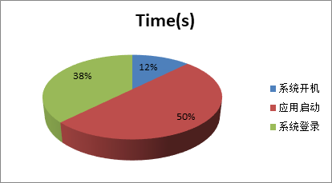
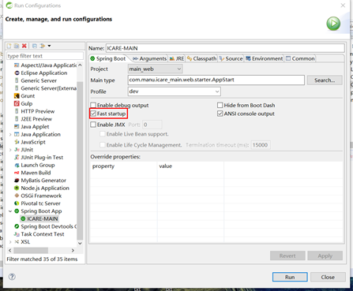
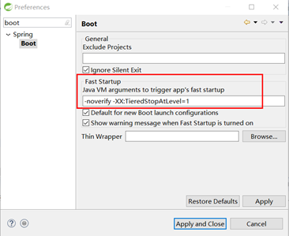
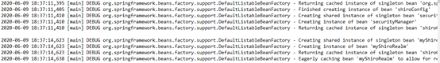
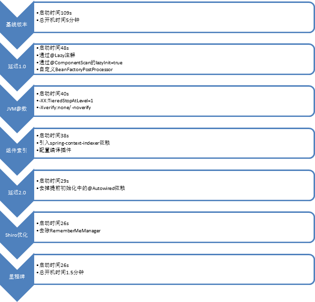

你的SpringBoot可以启动的再快点
公司最近推出了一款一体机产品，于是老板就天天提个小箱子跑客户做POC，倍儿有范儿。跑了一阵子客户反响（问题）不错（不少），其中最大的问题就是开机进系统太慢，按照老板的说法：
我按下开机键已经准备天花乱坠了，愣是给我一个系统维护界面5分钟才能进去。只好跟他们解释说我们是工业一体机比较严谨，开机前要做好充分的自检。
其实开机慢我们是有预期的，我们的应用是云端微服务应用，为了快速响应公司号召稍加改造就变成了边缘应用。在资源配置各方面大幅缩水的情况下，不慢都对不起我们30w行的代码量。
言归正传，万里长征第一步：重现。通过秒表多次测量的结果显示：
开机进入维护界面需要30s，
进入登录页需要2分30s，
登录进系统需要近4分钟
虽然没有反馈的那么夸张，这个速度也确实有点慢了。
问题定位
基于上面的测量结果，我们可以得到如下分布图：

系统启动时间占比较小，而且在操作系统级别的优化比较复杂收益不高，我们将优化的重心放在应用启动和系统登录两个部分。
应用启动
我们通过查看应用日志可以发现应用的实际启动时间为109s，这个时间和我们之前实测的时间也比较吻合，可以作为我们应用优化的基线。
系统登录
系统登录时间的消耗看起来不太合理，这是因为我们的应用使用了Eureka作为微服务的注册发现组件，导致了在应用启动后要经历多次心跳验证才能真正可用。这部分的优化策略是在一体机中去掉Eureka，RestTemplate直接访问本机Restful服务即可。
经过以上初步分析，我们明确了我们优化的对象就是109s的应用启动时间。在开始之前我们先说一下我们面临的应用规模，30w业务代码行，800+ spring管理的对象，Jar包大小70M左右。
他山之石
通过查阅资料可以找到一些先行者，虽然案例大多是很简单的应用，比如说只有一个依赖的情况优化到1s之内，但是原理上还是相通的。
延迟初始化
我们可以通过@Lazy指定单个bean的延迟初始化，或者通过@ComponentScan指定lazyInit=true，也可以实现一个LazyInitBeanFactoryPostProcessor类来灵活的指定。
在实际过程中我们发现不是所有的类都能设置为lazyInit的，比如消息队列的监听类如果一开始不进行实例化那么就永远不会被实例化，这会导致消息永远都不会被消费；还有定时任务类，同样不适合设置成lazyInit。
最终我们采用LazyInitBeanFactoryPostProcessor的方式实现了两个数组进行灵活定制：
1 | |
通过延迟初始化，应用启动时间从109s提升到48s，效果非常明显。
JVM启动参数优化
这里主要涉及的启动参数设置是下面两个：
-XX:TieredStopAtLevel=1
使用C1编译器，又称为客户端模式，相对于C2也就是服务端模式，C1编译生成的机器码更加关注快速启动但是由于机器码没有经过编译优化所以不适合在线上环境稳定运行。
-Xverify:none/ -noverify
通过去除字节码的验证来提升JVM启动速度，同样不适合线上对安全有要求的环境使用。
我们平时开发的时候可能注意到在IDE如Eclipse中启动一个SpringBoot应用的时候有一个选项叫Fast-startup，如图：

我们一般都是默认勾选的，殊不知这个选项对应的参数就是以上两个JVM参数。

这两个参数的设置可以大大提升我们本地启动的速度，而本地启动不存在稳定性和安全性的问题，所以适用这两个参数。
实际案例中我们通过这两个参数的设置，可以将启动时间提升到40s。
生成组件索引
通过引入Maven依赖spring-context-indexer在编译阶段来为组件生成索引加快类扫描速度。具体做法分为两步：
添加Maven依赖
1
2
3
4
5<dependency>
<groupId>org.springframework</groupId>
<artifactId>spring-context-indexer</artifactId>
<optional>true</optional>
</dependency>配置Maven Plugin
1
2
3
4
5
6
7
8
9
10
11
12
13
14
15
16<plugins>
<plugin>
<groupId>org.springframework.boot</groupId>
<artifactId>spring-boot-maven-plugin</artifactId>
<version>1.4.2.RELEASE</version><!--$NO-MVN-MAN-VER$-->
<configuration>
<executable>true</executable>
<annotationProcessorPaths>
<path>
<groupId>org.springframework</groupId>
<artifactId>spring-context-indexer</artifactId>
</path>
</annotationProcessorPaths>
</configuration>
</plugin>
</plugins>通过Maven install命令运行后在生成的jar包的META-INF目录下面会生成spring.components文件。如果你的项目是多模块项目，那么在每个模块的jar下面都会生成一个索引文件。
通过这步优化，启动时间可以提升到38s，效果不算明显。这和我们项目本身的规模还有路径扫描的速度有关，如果项目本身类不多或者路径扫描本身很快，那建索引就没有多大意义了，目前看来2s的提升聊胜于无吧。
上下求索
在通用优化建议的基础上，我们还根据自己的经验和尝试，进行了进一步的优化。
延迟初始化
这次的延迟初始化是从代码层面来进行。通过第一步的延迟初始化处理，我们筛选出一些需要提前初始化的类。而这些类的初始化由于存在类依赖等因素又会牵扯出一大串的初始化，导致我们在少量类的初始化上花费了较多的时间。
举个例子，我们有个消息消费类通过@Autowired强依赖类5个service，那么在这个Receiver类初始化的时候这5个service也会被触发初始化，service类中又通过@Autowired引入了其他类的初始化，层层传递导致一个类的初始化实际触发了几十个类的初始化，已经破坏了我们延迟初始化的设定。
针对这种情况可以在@Autowired字段上加上@Lazy注解，但是容器在注册属性的时候会提示一个warning：AnnotationUtils - Failed to meta-introspect annotation。虽然不影响后续初始化，但是看着还是很糟心的。所以我选择的方式是干脆把这几个需要提前初始化的类里面的@Autowired字段全部移除，使用的时候到ApplicationContext获取。
1 | |
通过代码改造之后的延迟初始化升级，启动时间提升到29s，效果还不错。
Shiro初始化优化
Shiro的问题是通过查看Spring debug日志中的跳变发现的。

在正常的日志中一般两个日志的间隔也就几十毫秒，而在shiro的初始化过程中我们发现了一段3s的间隔，那一定是发生了什么不可告人的事情。通过二分查找的Debug终于发现了问题所在。
在shiroConfig中需要定一个securityManager，我们使用了Apache包里自带的DefaultWebSecurityManager。以下是DefaultWebSecurityManager类的构造函数：
1 | |
我们发现在SecurityManager初始化的时候会初始化依赖的CookieRememberMeManager，最终调用到抽象类的构造函数。在这里有一句话最终造成了3s的启动延时：
1 | |
这是生成对称加解密密钥的方法，通过单元测试发现这句话单独执行时间也是在3s左右，验证了我们的结论。
解决方法简单粗暴，使用自定义的WebSecurityManager，去掉setRememberMeManager的调用即可。
经过这一步优化后，启动时间优化到26s，刚好是3s的提升。
温故知新
在一体机开机速度提升的需求驱动下，我们首先甄别出需要解决的关键问题就是应用启动时间。我们通过借鉴先行者的成功经验，成功的将应用启动时间从109s提升到38s。然后从日志分析入手，找出日志中的跳变点，解决了@Autowired引发的伪延迟问题和Shiro生成密钥的时间损耗。最终我们成功的将启动时间控制到了30s之内（26s），而相应的一体机从开机到老板开始天花乱坠也就只需要1分半钟，喝口水就掩饰过去了。
下面罗列一下我们的优化路径，供后续参考借鉴。
